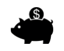

Tervetuloa pelaamaan DARUMA-hedelmäpeliä, jonka teemana on perinteinen japanilainen kulttuuri ja jossa jännitystä luovat Wild-kertoimet, ilmaiset Daruma-pyöräytykset ja monet muut hauskat toiminnot.
Darumat ovat paperimassasta tehtyjä nukkeja, jotka esittävät 500-luvulla elänyttä Bodhidharma-nimistä munkkia. Darumat ovat hyvän onnen tuojia. Ne myydään perinteisesti ilman silmiä. Nuken ostettuaan omistaja asettaa itselleen tavoitteen ja värittää samalla toisen nuken silmistä mustaksi; kun hän saavuttaa tavoitteensa, hän värittää toisenkin silmän.
TIETOJA PELISTÄ
Kaikki maksutaulukossa esitetyt arvot on laskettu kolikoiden vähimmäisarvon mukaan.Kaikki pelissä näkyvät arvot kerrotaan kolikoiden arvolla. Daruman silmän valinta näkyy vain peruspelissä. Sama Daruma-nukke, jonka silmä on merkitty ja josta peli alkoi, ilmestyy uudelleen ilmaisten pyöräytysten jälkeen. Voit merkitä Daruman silmän tai vaihtaa merkintää joka kerta, kun lataat pelin uudelleen. Voitto, joka sisältää Wild-symbolin, kerrotaan symbolin kertoimella.
Esimerkiksi:
| A | Wx2 | A | A | A |
Tuottaa 280 (140 x 2)
| A | A | A | Wx4 | A |
Tuottaa 560 (140 x 4)
Jos voitto sisältää enemmän kuin yhden kertoimen, kertomien arvot kerrotaan keskenään, minkä jälkeen voitto kerrotaan niiden tuloksella.
Esimerkiksi:
| A | Wx2 | Wx3 | Wx4 | A |
Tuottaa 3360 (140 x 24)
Kun Scatter-symbolit pysähtyvät kiekkoihin 1 ja 5, saat Kymmenen ilmaista pyöräytystä niin, että Wild-symbolit pysyvät paikoillaan.
PELIOHJEET
-
Valitse panos/kolikoiden nimellisarvo.
-
Aloita pelikierros napsauttamalla (tietokoneella) tai napauttamalla (mobiililaitteella) Pyöräytä-painiketta.
PELIN PAINIKKEET
|
Kuvake |
Tietokone |
Mobiili |
Toimenpide |
|
|
Pyöriä | Pyöriä | Aloittaa kierroksen |
|
|
ENIMMÄISPANOS | (sisältyy Panoksen valinta -näyttöön, joka on asetusvalikossa) | Määrittää vetokonfiguraation maksimaaliselle panostasolle. Aloita painamalla Pyöräytä-painike pohjaan. |
|
|
Autoplay | Käynnistä automaattipeli pitämällä Pyöräytä-painike pohjassa (tai sisältyy asetusvalikkoon) | Tuo esiin valikkonäytön, josta näkyvät kaikki pelissä käytettävissä olevat automaattipelin vaihtoehdot, jotta voit käynnistää useita kierroksia samanaikaisesti. |
|
|
Panoksen valinta | Panoksen valinta (tai sisältyy asetusvalikkoon) | Tuo esiin panoksen vaihtoehdot, joista pelaaja voi valita vetonsa tason. |
|
|
Asetusvalikko | Asetusvalikko | Avaa erillisen asetusnäytön, josta löytyy seuraavat vaihtoehdot: Aloitus, Ääni, Peliasetukset, Historia, Tietoja/Tuki ja Kassa (tarvittaessa) |
|
|
Ääni | (Pääasetusten alue on käytettävissä asetusvalikossa) | Tietokone – avaa ääniasetusten valikon, jossa voit ottaa musiikin tai äänitehosteet käyttöön tai poistaa ne käytöstä. |
|
|
Turbo-peli | (käytettävissä peliasetusten valikossa) | Muuttaa kiekkojen nopeuden pikapyöräytykseksi |
ASETUSPAINIKKEET
| Symboli | Kuvake | Toiminto |
| Kassanhoitaja |  | Palauttaa pelaajan operaattorin talletussivuille, jotta tämä voi lisätä varojaan tilille. |
| Maksutaulukot ja tuki | Esittelee yleiset maksutaulukot ja pelin toiminnot. | |
| Pelihistoria |
|
Näyttää saman pelisession aikana pelatut pelikierrokset. |
| Vetoasetukset |
|
Voit määrittää panosten arvon peliä varten tai valita jonkin muun käytettävissä olevan vaihtoehdon. |
| Automaattipelit |
|
Avaa sivun, jolla voit valita ja ottaa käyttöön jonkin monista tavanomaisista tai laajennetuista automaattipelivaihtoehdoista, mukaan lukien tappiorajoitukset (mikäli käytettävissä) |
| Peliasetukset |
|
Esittää käytettävissä olevat yleiset asetusvaihtoehdot (esim. pelaajan valittavissa olevat ääniasetukset, joilla pelaaja voi määrittää, mitkä äänet ovat käytössä pelisession aikana) |
| Aloitus |
|
Poistuu käynnissä olevasta pelisessiosta (vahvistuskysymyksen jälkeen) ja palaa takaisin palveluntarjoajan yleisille pelivalikkosivuille. |
MUITA TIETOJA PELISTÄ
-
Samanaikaiset eri voittolinjoilta saadut voitot lasketaan yhteen ja maksetaan pelaajalle.
-
Kolikoiden arvo – Näyttää nykyisen asetuksen teoreettisen panoshinnan. Kaikki voitot näytetään kolikoina, jotka konvertoidaan käteisvoitoksi kertomalla niiden määrä kolikoiden arvolla.
-
Veto – Näyttää nykyisen asetuksen vedon arvon. Vedon koko on yksi kolikko kerrottuna vedon kertoimella.
-
Kokonaisveto on kolikoiden arvo kerrottuna panoksen kertoimella, joka on 40 kolikkoa.
-
Maks. veto (VAIN tietokone) – Määrittää kolikon arvon suurimmaksi mahdolliseksi.
-
Pyöräytä-painike – Käynnistää pelin. Kun kiekot pyörivät, Pyöräytä-painike muuttuu Turbo Stop -painikkeeksi. Voit pysäyttää kiekot välittömästi painamalla Turbo Stop -painiketta.
-
Automaattipeli – Voit määrittää pelin pyörimään ilman, että sinun tarvitsee painaa Pyöräytä-painiketta joka kerta. Valitse automaattipelin kierrosten lukumäärä painamalla Automaattipeli-painiketta (tai pitämällä Pyöräytä-painike pohjassa, jolloin Automaattipeli-valikko avautuu). Voit tarvittaessa valita peliasetuksista lisäehtoja, joiden perusteella automaattipeli päättyy. Tappioraja estää joissain peliversioissa häviöitä ylittämästä automaattipelin aikana niille määrittämääsi rajaa. Voit pysäyttää automaattipelin manuaalisesti painamalla Pysäytä automaattipeli -painiketta.
-
Voitto – Näyttää tämänhetkisen tai viimeseksi maksetun voiton.
-
Käteinen/Kolikko – Näyttää tilin taseen joko käteisenä (rahallinen arvo) tai kolikoina (pelimerkkien määrä) valintasi mukaan. Oletusarvoinen valinta on käteinen.
PALAUTUSPROSENTTI
-
Pelin teoreettinen palautusprosentti pelaajalle on 96.112 %.
LISÄTIETOJA
-
Kaikki voittolinjat maksetaan vasemmalta oikealle alkaen aina kiekosta 1, poikkeuksena Scatter-linjat, jotka näkyvät 1. ja 5. kiekossa.
-
Lisätoimintojen aikana saadut voitot maksetaan voittolinjoilla saatujen voittojen lisäksi.
-
Mikäli pelilaitteessa tai -ohjelmassa sattuu toimintahäiriö, kaikki senhetkiset pelin vedot ja maksut nollataan ja senhetkiset vedot hyvitetään.
-
Maksimivoitto pelissä on €500,000.